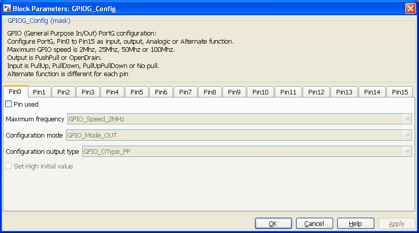
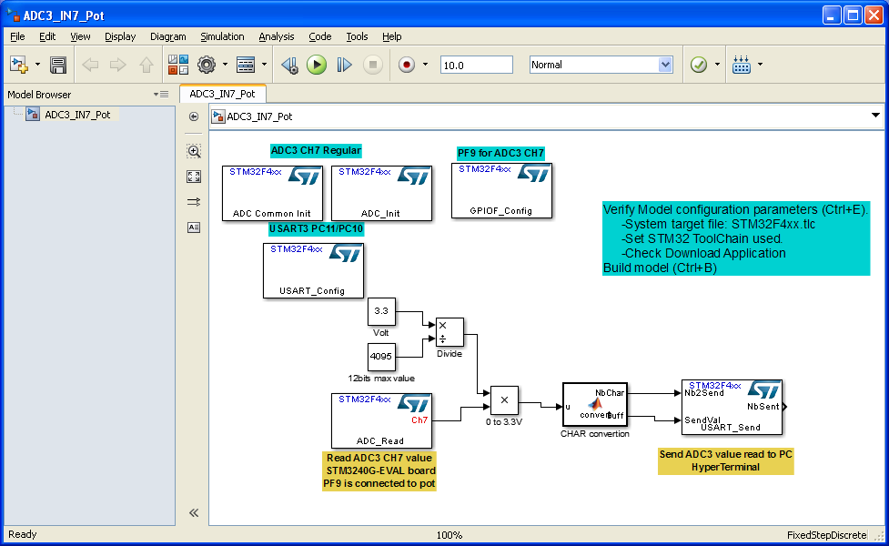
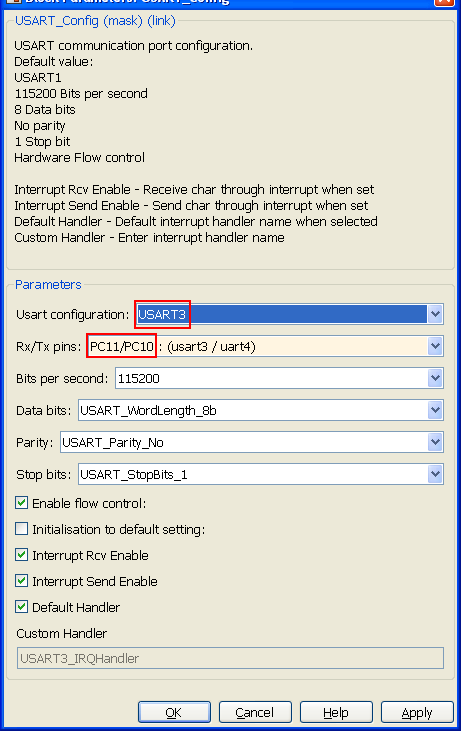

GPIOG Configuration model
Model used to configure up to 16 pins of STM32F4 GPIO portG.
Contents
S-Function
Nb Input: 0
Nb Output: 0

Parameters
Configure individually each pin (0 to 15) for PortG.

Pin used
Must be selected to configure Pin. Parameters are not available and not taken into account if not selected.
Maximum frequency
Set maximum frequency available for configured pin.

Configuration mode
Pin can be configured as input, output, Alternate function or analog.
- Input : Pin value is read as 0 or 1 (VSS or VDD)
- Output : Pin value is set as 0 or 1 (VSS or VDD). Default
- Alternate function : Pin is dedicated to peripheral and automatically configured. (Example: Usart Rx)
- Analog : Pin is configured for ADC.

Configuration output type
When Configuration mode is GPIO_Mode_Out (Pin is configured as Output). Output pin can be configured as PushPull or OpenDrain.

Set High initial value
When Pin is output configured. Set the Pin initial value High or low after configuration.
Configuration PullUp pullDown
When Configuration mode is GPIO_Mode_In (Pin is configured as Input). Pin can be internally connected to pull up (default High value), pull down (default low value) or no not connected (no pull)

Alternate Function
When Configuration mode is GPIO_Mode_AF (Pin is configured as Alternate Function). This parameter gives possible peripheral setting for this pin.
- GPIO_AF_TIM2 : Timer 2
- GPIO_AF_TIM5 : Timer 5
- GPIO_AF_TIM8 : Timer 8
- GPIO_AF_USART2 : Usart N° 2
- GPIO_AF_UART4 : Uart N° 4
- GPIO_AF_ETH : Ethernet
- GPIO_AF_EVENTOUT : Output event

Example 1
ADC configuration example.
This example is based on STM3240G-EVAL board. Analog-to-digital converter (ADC3) reads potentiometer value from PortF-Pin9.

PortF Pin9 is analog mode configured.

Note : Port C pin 10 and Port C pin 11 are automatically configure as alternate function from USART_Config model.

Example 2
GPIO toggle output.
This example is based on STM3240G-EVAL board.
PortC-Pin7 is configured as output push/pull. Pin7 toggle in order to blink connected blue Led.

PortC Pin7 is output configured. Initial value is High

GPIO_Write model PortC Pin7 toggle.